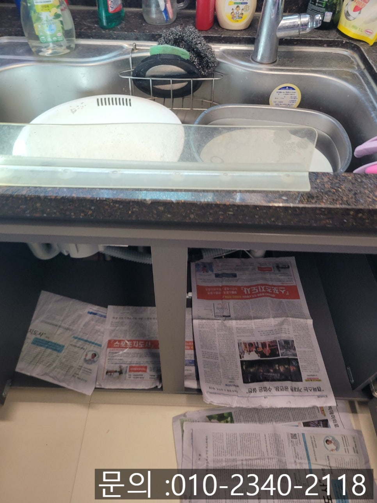
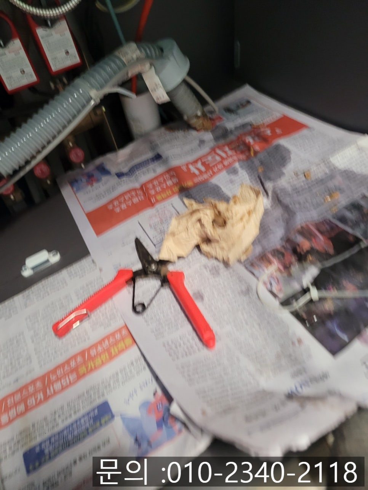
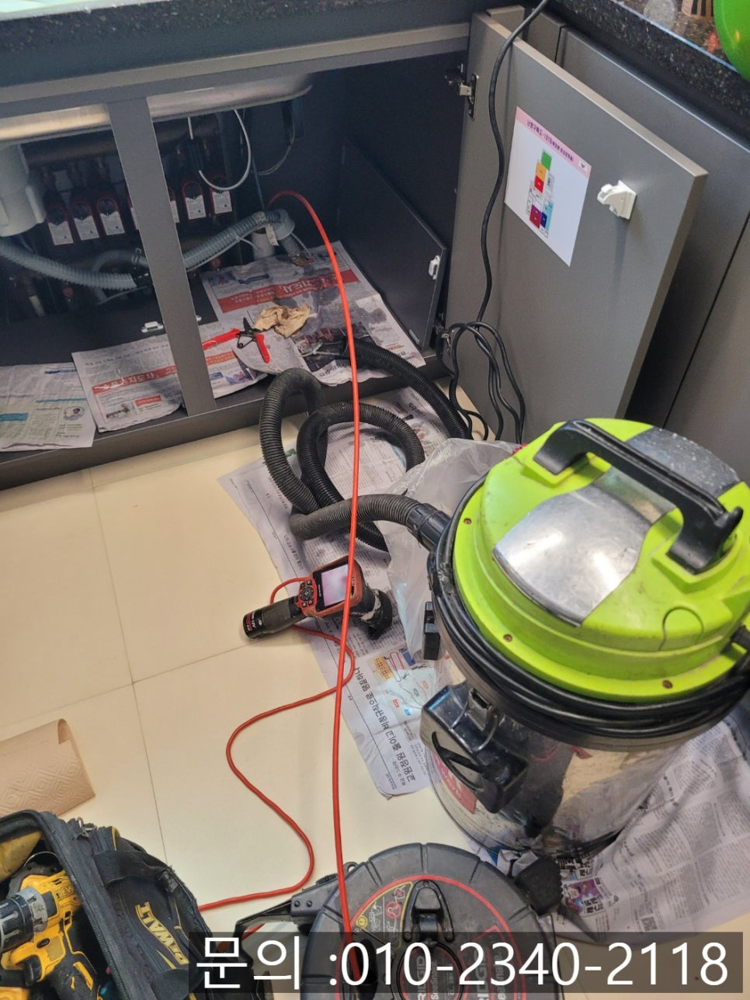
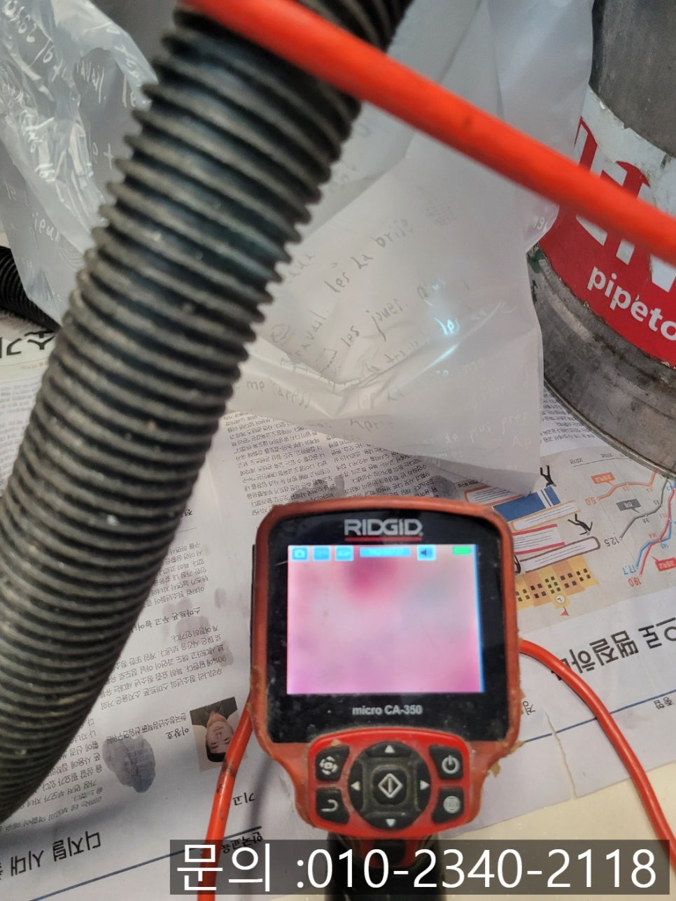
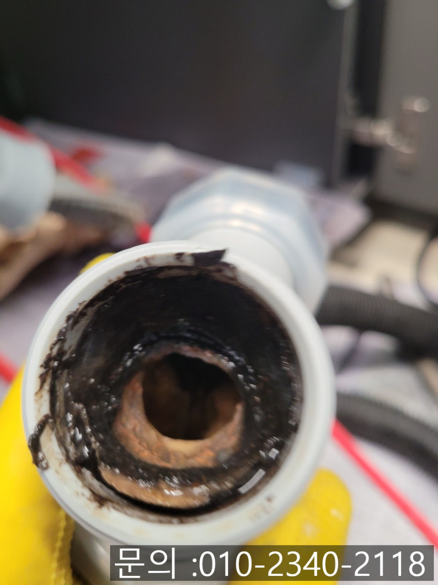
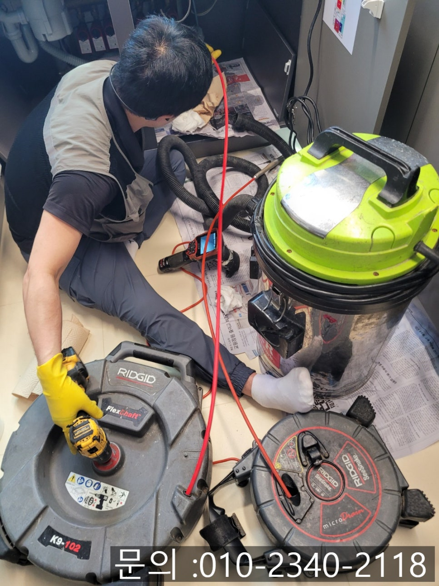

🏠 황계동 싱크대 막힘 화성 배양동 배관 뚫는 비용이 합리적인 업체
화성 싱크대막힘 전문 시공 후기

📋 작업 개요
- 위치: 화성
- 서비스 유형: 싱크대막힘, 하수구막힘, 배관막힘, 누수수리, 역류해결, 뚫는업체, 배관청소, 고압세척
- 작업 일시: 2025. 7. 14. 17:08
- 업체명: 하수구수사대 (010-5615-2118)
🔍 문제 상황
안녕하세요.
황계동 싱크대 막힘, 화성 배양동 배관 뚫는 비용이 합리적인 업체 하수구 다큐멘터리입니다.
요즘처럼 덥고 습한 여름철에는 주방 위생이 무엇보다 중요한 것 아시죠? 특히 싱크대 배수가 원활하지 않거나, 역류 같은 문제가 생기면 불쾌한 냄새와 더불어 세균 번식하게 되는 원인이 되기도 하지요.

🔎 원인 분석
💡 전문가 진단: 정밀 진단 장비를 사용하여 슬러지의 고착 여부를 판명하고 타격/세척 작업을 실시했습니다.
최근에 아파트에 거주 중인 고객님께서 싱크대 물이 잘 내려가지 않고 역류하는 문제로 연락을 주신 사례를 소개해 드려 보도록 할게요. 하수구 다큐멘터리는 고객님의 편의에 맞춰 약속시간을 정하고 엄수하여 방문 드리려고 합니다.
황계동 싱크대 막힘 현장에 도착해 가장 먼저 배수 상태를 확인해 보니, 싱크대 배수구 자체가 심하게 막혀있는 것은 물론 물이 전혀 내려가지 않고 차오르면서 냄새도 심하게 나는 상황이었어요. 단순히 막힌 것이 아니라 내부 상태도 자세하게 살펴봐야만 했어요. 오염물이 흐를 수 있기 때문에 신문지 등을 깔아놓고 작업을 시작하였어요.
배관 내시경을 진입시켜 확인해 보려고 싱크대 하부 장을 살펴보던 중, 주름 관 부분이 이물질이 가득 차 있음을 느껴 곧바로 분해 작업을 진행하였어요.

🔧 작업 과정
분해 후 주름 관 안을 살펴본 결과, 내부는 기름 찌꺼기와 음식물 부스러기가 굳어져 형성된 슬러지로 가득 차 있었어요. 기름 성분은 시간이 지나면서 점점 굳고 단단해지기 때문에 자주 청소해 주지 않으면 배수가 되지 않으면서 하수구 막힘 원인이 됩니다.
우선 주름 관은 완전히 분리하여 내부를 깨끗하게 세척해 주었어요. 기름 찌꺼기와 슬러지를 꼼꼼하게 제거하고 물로 행군 후, 깔끔하게 건조해 주었어요. 그 후에는 막힌 배관 내부를 처리하기 위해 플렉스 샤프트 장비를 활용하기로 하였어요.
샤프트 장비는 회전식 노즐 끝에 갈퀴 모양의 체인이 돌아가면서 강한 회전력으로 배관 벽에 단단하게 굳어있는 슬러지 등을 잘게 부숴주면서 청소 작업이 가능합니다. 마치 믹서기처럼 갈아주기 때문에 딱딱하게 굳은 이물질까지도 말끔하게 제거해 줄 수 있습니다.
황계동 싱크대 막힘 이물질을 충분하게 갈아낸 후에는 석션기를 이용하여 갈려 나온 이물질과 잔여 찌꺼기를 강력한 흡입력으로 제거해 주었어요. 이 작업으로 배관 내부에 남은 찌꺼기 없이 깔끔하게 정리할 수 있어 더욱 위생적으로 마무리할 수 있습니다.
마지막으로, 처음 분해했던 주름 관을 재조립하고 연결 부위에 누수가 발생하지는 않는지 꼼꼼하게 점검하였어요. 싱크대에 물을 여러 차례 흘려보며 배수가 원활하게 이루어지는지 확인하였어요. 다행히도 막힘없이 물이 시원하게 잘 내려갔어요. 깨끗해진 배관 내부도 내시경 카메라를 통해 재차 확인하고 모든 작업을 마무리할 수 있었어요.


✅ 작업 완료
황계동 싱크대 막힘은 위생에 큰 영향을 줄 수 있는 문제이기 때문에 빠른 해결이 필요합니다. 특히 주름 관 같은 눈에 잘 띄지 않는 부분은 방치되기 쉬우므로 전문가에게 점검받고 해결하시는 것이 가장 좋은 방법입니다. 하수구 다큐멘터리는 고객님 불편을 빠르게 해결해 드리면서 화성 배양동 배관 뚫는 비용이 합리적입니다. 믿고 맡겨주시면 신속하게 해결해 드리겠습니다.
경기도 화성시 효행로 1060 10층 1004-A246호




⚠️ 베란다 누수 및 방수 관리 방법
- ✅ 비가 많이 올 때 창틀 주변이나 아래층 천장에 얼룩이 생기는지 정기적으로 확인해 보세요.
- ✅ 우수관 주변 실리콘 마감이 들뜨거나 깨진 틈새가 있는지 손상 여부를 수시로 체크하세요.
- ✅ 베란다 바닥 타일의 줄눈(메지)이 소실되면 그 틈으로 물이 침투하여 누수가 유발됩니다.
- ✅ 누수 의심 증상 발견 시 방치하면 아래층 손실이 커지므로 즉시 전문가의 진단을 받으십시오.
💡 핵심 정리
- 확실한 장비 작업(내시경 점검 및 샤프트 스케일링)으로 원인을 뿌리 뽑습니다.
- 작업 후 1년 이내에 동일한 부위 재발 시 100% 무상 A/S 서비스를 보장합니다.
- 서울 · 경기 · 인천 전 지역에 24시간 언제든 긴급 출동할 수 있도록 항시 대기 중입니다.
❓ 자주 묻는 질문 (FAQ)
🚨 화성 싱크대막힘 문제로 고민이신가요?
정확한 원인 진단과 확실한 시공으로 재발 없는 해결을 약속드립니다.
24시간 긴급 출동 | 서울 · 경기 · 인천 전지역 | 1년 내 재발 시 무상 A/S